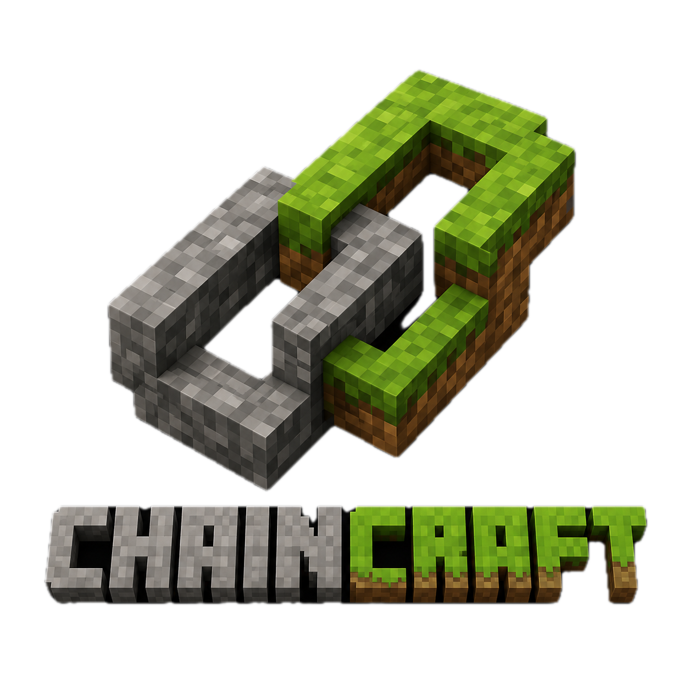

Open
Peers speak ctl.hello, gossip signed envelopes, and run
your validators in a linear pipeline. No central broker.

Peer-to-peer protocols like blockchains, chat rooms, BitTorrent swarms, and content-addressed stores. Assemble proof-of-work, proof-of-stake, or PBFT with a balance or UTXO ledger on one mesh — Python, Rust, and TypeScript at feature parity.
The main path is a blockchain: consensus, a ledger, a mempool, and a fee policy on the same mesh, in all three languages. Gossip objects such as chat, BitTorrent, and a content-addressed store do not need a head. They keep whatever they have received.
Peers speak ctl.hello, gossip signed envelopes, and run
your validators in a linear pipeline. No central broker.
id is SHA-256 of the canonical payload, so a relay
can rebuild a message. A missing message is a gap, not a fork,
unless you opted into a consensus object.
Compose a chain: proof-of-work, proof-of-stake, or PBFT, with a balance or UTXO ledger, a mempool, and fees. The same mesh also runs protocols that never agree on a head.
Wire, objects, then a blockchain stack: consensus, ledger, mempool, fees. Invalid messages are rejected the same way in every language.
| Level | Family | What you get |
|---|---|---|
| 0 | Wire | Canonical JSON, envelopes, TCP framing, ctl.hello, Schnorr, Ed25519 |
| 1 | Objects | receive for a prototype. Gossip is relayed. link.* stays on that peer. Mementos only when a consensus object syncs |
| 2 | Protocols | Publish-subscribe, chat rooms, an append-only stream, a BitTorrent swarm (Mesh client). No shared head. |
| 2 | Consensus | pow, pos, pbft — only when peers must agree |
| 2 | Ledger | balance, utxo |
| 2 | Market | Mempool with RBF, fee ranking, burn split, base fee |
| 2 | Network | Peer book, NAT (STUN, hole punch, relay), address URIs, localhost UDP, in-process pipe, pedagogical mailto/WebRTC/forum buses |
Consensus in 1.1.0 (same decisions in all three languages):
from chaincraft import Envelope, encode_frame
env = Envelope.build("app.counter", {"by": "alice", "delta": 1})
frame = encode_frame(env.to_bytes())
print(env.id) # sha256 of the canonical payload
A mesh node listens, completes ctl.hello, deduplicates by
payload id, and applies your objects only after every object accepts
the message. The mesh opens the TCP sockets. Your protocol implements
receive.
Reorgs: a proof-of-work tip change walks back to the
common ancestor. canonical is the parent chain. Orphan
blocks stay stored.
40 of 40 features. Python, Rust, and TypeScript accept and reject the
same inputs and emit the same bytes. The registry is
SPEC/features.yaml. CI fails when a language drifts.
| Core | Package | 1.1.0 |
|---|---|---|
| Python | chaincraft (PyPI) |
Published. Reference. Vectors are generated from it. Node: python3 -m chaincraft.node. |
| Rust | chaincraft 1.1.0 (crates.io) |
Published. Same wire, same fork choice, same error classes. Bins: chaincraft-node, chaincraft-bt-node. |
| TypeScript | @chaincraft/core 1.1.0 (npm) |
Published. 39 implemented. Raw UDP is exempt: browsers have no UDP socket, and UDP is optional at Level 0. The unscoped npm name chaincraft belongs to another project. |
python3 tools/parity_check.py --summary
python3 conformance/run_all.py
python3 conformance/runner/run_interop.py
app.pubsub is a gossip object, not a consensus protocol.
A room is a topic. Join, leave, and speak are ordinary messages.
The handler is receive. The log is sorted by
seq, then by author. A node that never saw a post
simply does not have it.
{"app":"pubsub","op":"subscribe","room":"general","author":"alice"}
{"app":"pubsub","op":"publish","room":"general","author":"alice","text":"hello","seq":0}
{"app":"pubsub","op":"unsubscribe","room":"general","author":"alice"}
A second room is a second topic. Bob can speak in general
and still be rejected in trading until he subscribes.
Repeating ok uses a new seq. The same
seq is rejected. The contract is
SPEC/features/app-pubsub.md.
These examples open TCP sockets. Run one node on the local default
port 127.0.0.1:9735, two nodes in one program, then a
three-language mesh on loopback or a LAN. The control channel is JSON
lines on stdin. The same commands work in all three nodes.
From the package registries. Python 3.9+, a Rust toolchain, and Node 20+.
pip install chaincraft
cargo install chaincraft
npm install --global @chaincraft/core
cargo add chaincraft and
npm install @chaincraft/core are the library
installs, for the programs below.
Clone only if you want the source tree:
git clone https://github.com/jose-compu/chaincraft-monorepo.git.
A prototype implements receive. The node wraps the
payload, hashes it, and relays it. It does not interpret your
application type, and peers may miss a message.
Override is_valid only to reject, and
add_message only for a consensus protocol.
With no argument the node binds 0.0.0.0:9735.
Local peers still dial 127.0.0.1:9735.
It prints ready with the bound address.
python3 -m chaincraft.node{"event":"ready","addr":"0.0.0.0:9735","impl":"py-chaincraft/1.1.0"}
Same bind after the registry installs:
chaincraft-node and
chaincraft-ts-node.
Pass host:port to override. 127.0.0.1:0
is an ephemeral port.
One local TCP mesh. Python holds the default port. Rust and
TypeScript take the next two and dial Python. Three terminals,
after the registry installs above.
If a node prints a different ready.addr, connect
to that address.
# Terminal 1 — Python
python3 -m chaincraft.node
# ready addr 0.0.0.0:9735
# Terminal 2 — Rust
chaincraft-node 127.0.0.1:9736
# Terminal 3 — TypeScript
chaincraft-ts-node 127.0.0.1:9737
# fallback: node node_modules/@chaincraft/core/dist/node.js 127.0.0.1:9737On terminal 2 and terminal 3, connect to the default port:
{"cmd":"connect","addr":"127.0.0.1:9735"}
Each prints connected, then hello after
ctl.hello. The three processes are now one network
on loopback.
Commands: connect, send, ids,
quit. Stdout events:
ready (addr, impl),
hello (peer, addr),
connected,
sent (id),
received (id, type),
ids,
error.
quit stops the process.
On the Python node (terminal 1):
{"cmd":"send","type":"app.hello","data":{"message":"Hello, Chaincraft!"}}
Python prints sent with a 64-hex id.
After ctl.hello, Rust and TypeScript print
received with that same id. On any node:
{"cmd":"ids"}All three lists contain the same digest. Same content, same canonical JSON, same id. Deduplication stops the relay from looping. Send from Rust or TypeScript the same way; the other two languages receive it.
These open sockets. Node A listens on 9735, node B on
9736. B dials A and gossips app.hello.
Both record the same payload id.
Save as hello.py and run python3 hello.py.
import time
from chaincraft.mesh import Mesh
from chaincraft.object import SharedObject
class Hello(SharedObject):
def receive(self, message):
print("Received:", message["message"])
hello = Hello()
a = Mesh(on_app=lambda t, d: hello.receive(d) if t == "app.hello" else None)
b = Mesh()
print("listening", a.start("127.0.0.1", 9735))
print("listening", b.start("127.0.0.1", 9736))
b.connect(a.listen_addr)
digest = b.broadcast("app.hello", {"message": "Hello, Chaincraft!"})
time.sleep(0.4)
print(digest)
a.close()
b.close()
After cargo add chaincraft, save as
src/main.rs and run cargo run.
[package]
name = "hello"
version = "0.1.0"
edition = "2021"
[dependencies]
chaincraft = "1.1.0"use std::sync::Arc;
use std::thread;
use std::time::Duration;
use chaincraft::mesh::Mesh;
use chaincraft::{parse_json, JsonValue, Protocol};
struct Hello;
impl Protocol for Hello {
fn receive(&mut self, message: &JsonValue) {
let text = message
.as_object()
.and_then(|obj| obj.get("message"))
.and_then(|value| value.as_str())
.unwrap_or("");
println!("Received: {text}");
}
}
fn main() {
let a = Mesh::bind("127.0.0.1:9735").unwrap();
let b = Mesh::bind("127.0.0.1:9736").unwrap();
a.lock().unwrap().set_on_app(Arc::new(|_t, data| {
Hello.receive(data);
}));
Mesh::connect(&b, "127.0.0.1:9735").unwrap();
let data = parse_json(r#"{"message":"Hello, Chaincraft!"}"#).unwrap();
let id = Mesh::broadcast(&b, "app.hello", data).unwrap();
thread::sleep(Duration::from_millis(400));
println!("{id}");
}
After npm install @chaincraft/core, save as
hello.mjs and run node hello.mjs.
import { Mesh } from "@chaincraft/core";
const a = new Mesh();
const b = new Mesh();
a.onApp = (_t, data) => {
console.log("Received:", data.message);
};
console.log("listening", await a.start("127.0.0.1", 9735));
console.log("listening", await b.start("127.0.0.1", 9736));
await b.connect(a.listenAddr);
const id = b.broadcast("app.hello", { message: "Hello, Chaincraft!" });
await new Promise((r) => setTimeout(r, 400));
console.log(id);
a.close();
b.close();
Start further processes on unused ports and
connect them to a node that is already listening.
Each mesh keeps at most 256 peers.
connect allows loopback, RFC1918, public unicast
IPv4, localhost, .local, and ordinary
DNS names. Unspecified, link-local, multicast, and reserved
addresses are refused. Default bind is 0.0.0.0:9735.
python3 -m chaincraft.node
# other host
python3 -m chaincraft.node 0.0.0.0:9736
# then: {"cmd":"connect","addr":"203.0.113.10:9735"}Attach a ledger or a consensus object and run the live 3×3 interop matrix. The wire rules are SPEC/wire-v1.md. The walkthrough in markdown is hello-world.md.
1.1.0 —
chaincraft on PyPI,
chaincraft on crates.io,
@chaincraft/core on npm.
pip install chaincraft
cargo add chaincraft
npm install @chaincraft/core
Ed25519: pip install "chaincraft[ed25519]".
The unscoped npm name chaincraft belongs to another project.
Then a two-node TCP mesh:
from chaincraft.mesh import Meshuse chaincraft::mesh::Mesh;import { Mesh } from "@chaincraft/core";Release: v1.1.0. Nodes from source are in Hello World.
Three paths, depending on what you are building.
One node on 127.0.0.1:9735, two sockets in one
program, or three nodes — Python, Rust, TypeScript — on loopback
or a LAN.
Core node: connect, send, ids, quit.
BitTorrent is a separate Mesh client.
Chat, a counter, a beacon: implement receive.
The message is applied on the node that has it. A disconnect
may leave a gap.
Proof-of-work or proof-of-stake, a balance or UTXO ledger, a mempool and a fee policy. The three languages must agree.